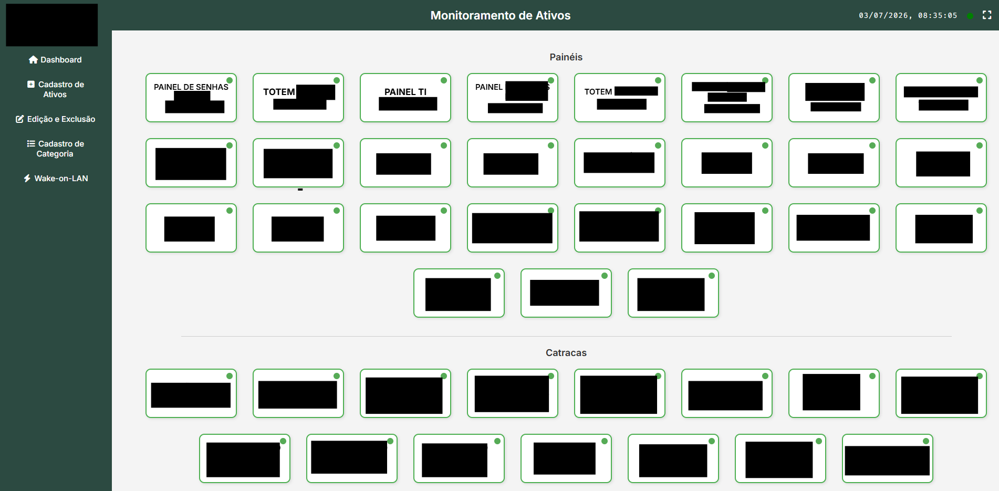
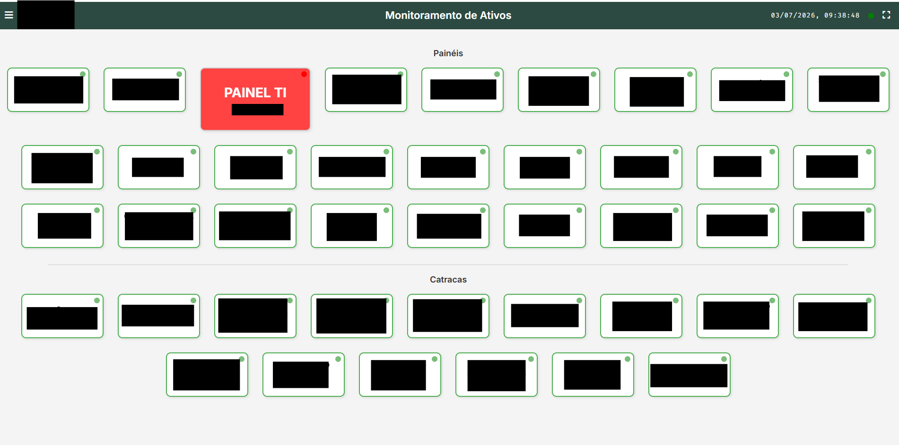
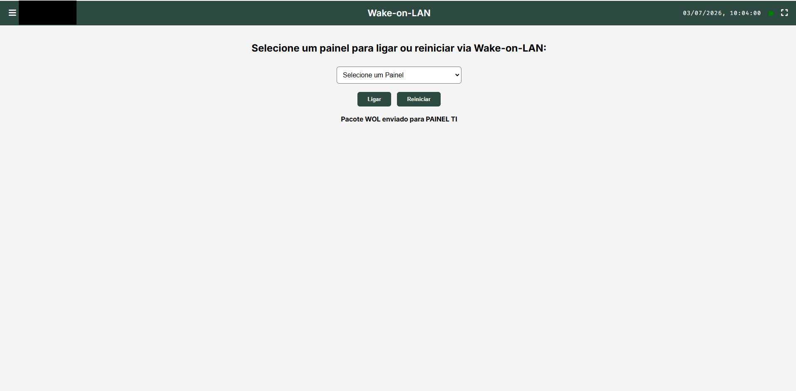

Monitoramento de Ativos
Plataforma desenvolvida para monitorar computadores, servidores e equipamentos de rede em tempo real, permitindo verificar disponibilidade, executar Wake-on-LAN, acessar remotamente máquinas e acompanhar o status geral do ambiente de TI.

Sobre o Projeto
Este sistema foi desenvolvido para facilitar o gerenciamento dos equipamentos da infraestrutura de TI, permitindo monitoramento centralizado, acesso rápido às informações dos dispositivos e execução de ações remotas.
Objetivo
Centralizar o monitoramento dos equipamentos, reduzindo o tempo de diagnóstico e facilitando a administração da infraestrutura.
Problema Resolvido
Antes era necessário acessar diversos sistemas ou realizar verificações manuais para identificar máquinas indisponíveis ou desligadas.
Solução
O sistema reúne todas as informações em uma única interface, permitindo monitoramento em tempo real e execução de Wake-on-LAN com poucos cliques.
Resultados
Redução do tempo de atendimento, maior controle dos ativos da rede e resposta mais rápida a incidentes.
Conhecendo o Sistema
Abaixo estão algumas das principais telas do sistema, demonstrando seu funcionamento e os recursos disponíveis.

Dashboard Principal
Tela inicial responsável por apresentar uma visão geral dos equipamentos monitorados, indicadores e atalhos para as principais funcionalidades.

Lista de Equipamentos
Exibe todos os computadores e servidores cadastrados, permitindo consultar rapidamente o status de cada equipamento.

Wake-on-LAN
Permite ligar computadores remotamente através da rede utilizando o protocolo Wake-on-LAN.

Detalhes do Equipamento
Exibe informações completas da máquina, como IP, MAC Address, sistema operacional, último acesso e disponibilidade.
Como o Sistema Funciona
Fluxo simplificado do funcionamento do sistema desde a consulta dos equipamentos até a atualização do painel.
Equipamentos
Computadores, notebooks e servidores cadastrados.
Monitoramento
O sistema realiza verificações automáticas de status.
Banco de Dados
Os dados são armazenados para consulta e histórico.
Dashboard
O usuário acompanha tudo em tempo real.
Desafios e Soluções
Durante o desenvolvimento do sistema diversos desafios técnicos precisaram ser solucionados para garantir estabilidade, desempenho e facilidade de utilização.
Monitoramento em tempo real
Desenvolvi um processo de atualização automática para manter o status dos equipamentos sempre atualizado sem exigir intervenção do usuário.
Wake-on-LAN
Implementei o envio de pacotes Wake-on-LAN para permitir ligar computadores remotamente através da rede interna.
Experiência do usuário
A interface foi projetada para permitir acesso rápido às informações mais importantes, reduzindo o tempo necessário para localizar qualquer equipamento.
Escalabilidade
A arquitetura foi desenvolvida pensando na expansão do ambiente, permitindo adicionar novos equipamentos e funcionalidades sem necessidade de grandes alterações.
Gostou deste projeto?
Este é apenas um dos sistemas que desenvolvi. Conheça outros projetos envolvendo automações, infraestrutura, integrações corporativas, monitoramento e desenvolvimento Full Stack.